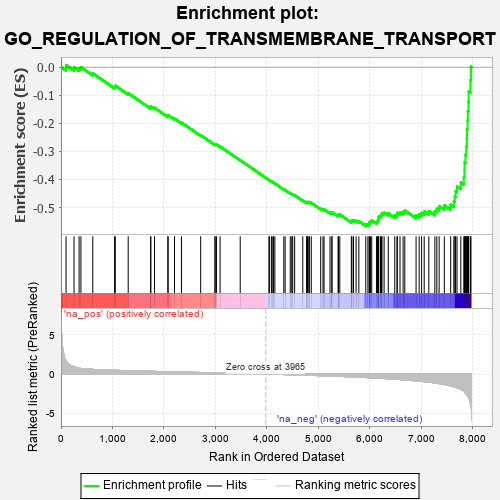
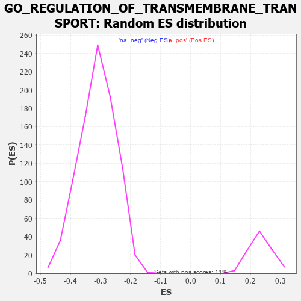

| | | Dataset | 7d |
| Phenotype | NoPhenotypeAvailable |
| Upregulated in class | na_neg |
| GeneSet | GO_REGULATION_OF_TRANSMEMBRANE_TRANSPORT |
| Enrichment Score (ES) | -0.56580573 |
| Normalized Enrichment Score (NES) | -1.8215487 |
| Nominal p-value | 0.0 |
| FDR q-value | 0.011373077 |
| FWER p-Value | 0.314 |
Table: GSEA Results Summary

Fig 1: Enrichment plot: GO_REGULATION_OF_TRANSMEMBRANE_TRANSPORT
Profile of the Running ES Score & Positions of GeneSet Members on the Rank Ordered List
| PROBE | GENE SYMBOL | GENE_TITLE | RANK IN GENE LIST | RANK METRIC SCORE | RUNNING ES | CORE ENRICHMENT | | 1 | IRS1 | | | 98 | 1.659 | 0.0075 | No |
| 2 | THADA | | | 253 | 0.931 | -0.0009 | No |
| 3 | GSK3A | | | 351 | 0.745 | -0.0043 | No |
| 4 | BAX | | | 387 | 0.711 | -0.0002 | No |
| 5 | KCND2 | | | 617 | 0.590 | -0.0222 | No |
| 6 | AKT1 | | | 1040 | 0.476 | -0.0701 | No |
| 7 | MEF2C | | | 1054 | 0.473 | -0.0661 | No |
| 8 | KCNH7 | | | 1305 | 0.427 | -0.0927 | No |
| 9 | JPH1 | | | 1741 | 0.347 | -0.1439 | No |
| 10 | SLMAP | | | 1744 | 0.346 | -0.1399 | No |
| 11 | FMR1 | | | 1816 | 0.334 | -0.1450 | No |
| 12 | KCNC2 | | | 2075 | 0.295 | -0.1742 | No |
| 13 | LRRC7 | | | 2080 | 0.294 | -0.1712 | No |
| 14 | C2CD5 | | | 2204 | 0.276 | -0.1835 | No |
| 15 | ANO6 | | | 2339 | 0.255 | -0.1975 | No |
| 16 | PHB2 | | | 2712 | 0.197 | -0.2424 | No |
| 17 | ISCU | | | 2989 | 0.151 | -0.2756 | No |
| 18 | AZIN2 | | | 2993 | 0.150 | -0.2742 | No |
| 19 | COX17 | | | 3019 | 0.147 | -0.2756 | No |
| 20 | CHP1 | | | 3089 | 0.138 | -0.2827 | No |
| 21 | CDK5 | | | 3480 | 0.080 | -0.3314 | No |
| 22 | CLIC6 | | | 4037 | -0.014 | -0.4018 | No |
| 23 | ATG5 | | | 4051 | -0.016 | -0.4033 | No |
| 24 | PDE4B | | | 4089 | -0.022 | -0.4077 | No |
| 25 | MTOR | | | 4114 | -0.025 | -0.4105 | No |
| 26 | ABL1 | | | 4125 | -0.027 | -0.4115 | No |
| 27 | WNK3 | | | 4153 | -0.034 | -0.4145 | No |
| 28 | STAC | | | 4327 | -0.064 | -0.4357 | No |
| 29 | ADRB2 | | | 4352 | -0.068 | -0.4379 | No |
| 30 | KCNQ4 | | | 4452 | -0.085 | -0.4495 | No |
| 31 | JPH3 | | | 4481 | -0.091 | -0.4519 | No |
| 32 | MEF2A | | | 4499 | -0.095 | -0.4530 | No |
| 33 | RTN2 | | | 4537 | -0.102 | -0.4564 | No |
| 34 | CRBN | | | 4695 | -0.138 | -0.4747 | No |
| 35 | PLCG1 | | | 4770 | -0.151 | -0.4823 | No |
| 36 | PIM1 | | | 4776 | -0.152 | -0.4811 | No |
| 37 | MYO5A | | | 4787 | -0.155 | -0.4805 | No |
| 38 | TERT | | | 4801 | -0.157 | -0.4803 | No |
| 39 | WDR1 | | | 4824 | -0.163 | -0.4811 | No |
| 40 | DLG1 | | | 4860 | -0.169 | -0.4836 | No |
| 41 | PDPK1 | | | 5043 | -0.207 | -0.5042 | No |
| 42 | DRD2 | | | 5088 | -0.221 | -0.5071 | No |
| 43 | MMP9 | | | 5108 | -0.227 | -0.5068 | No |
| 44 | CLCN2 | | | 5224 | -0.250 | -0.5184 | No |
| 45 | SCN1A | | | 5260 | -0.261 | -0.5197 | No |
| 46 | PTEN | | | 5262 | -0.261 | -0.5167 | No |
| 47 | GRIN1 | | | 5381 | -0.291 | -0.5282 | No |
| 48 | DLG4 | | | 5388 | -0.293 | -0.5255 | No |
| 49 | KCNC4 | | | 5414 | -0.298 | -0.5251 | No |
| 50 | G6PD | | | 5638 | -0.358 | -0.5491 | No |
| 51 | WNK1 | | | 5650 | -0.362 | -0.5462 | No |
| 52 | CD63 | | | 5680 | -0.370 | -0.5454 | No |
| 53 | CALCR | | | 5730 | -0.386 | -0.5470 | No |
| 54 | TRPC6 | | | 5784 | -0.401 | -0.5489 | No |
| 55 | KCNQ1 | | | 5918 | -0.441 | -0.5605 | Yes |
| 56 | ACTN2 | | | 5960 | -0.458 | -0.5602 | Yes |
| 57 | STAC2 | | | 5987 | -0.466 | -0.5579 | Yes |
| 58 | KCNH6 | | | 5988 | -0.467 | -0.5523 | Yes |
| 59 | NETO2 | | | 6009 | -0.475 | -0.5491 | Yes |
| 60 | HVCN1 | | | 6034 | -0.482 | -0.5464 | Yes |
| 61 | DLG2 | | | 6126 | -0.513 | -0.5518 | Yes |
| 62 | SCN9A | | | 6146 | -0.518 | -0.5480 | Yes |
| 63 | KCNQ5 | | | 6161 | -0.524 | -0.5435 | Yes |
| 64 | GOPC | | | 6167 | -0.528 | -0.5378 | Yes |
| 65 | STIM1 | | | 6169 | -0.528 | -0.5316 | Yes |
| 66 | INSR | | | 6204 | -0.538 | -0.5294 | Yes |
| 67 | KCNH8 | | | 6225 | -0.545 | -0.5254 | Yes |
| 68 | RGN | | | 6233 | -0.547 | -0.5197 | Yes |
| 69 | STK39 | | | 6274 | -0.563 | -0.5180 | Yes |
| 70 | GALR2 | | | 6355 | -0.599 | -0.5210 | Yes |
| 71 | DYSF | | | 6481 | -0.654 | -0.5290 | Yes |
| 72 | VAMP2 | | | 6525 | -0.672 | -0.5264 | Yes |
| 73 | REM1 | | | 6530 | -0.676 | -0.5188 | Yes |
| 74 | ARF1 | | | 6583 | -0.701 | -0.5170 | Yes |
| 75 | ACSL5 | | | 6643 | -0.737 | -0.5156 | Yes |
| 76 | DPP6 | | | 6676 | -0.751 | -0.5107 | Yes |
| 77 | HCN1 | | | 6895 | -0.865 | -0.5280 | Yes |
| 78 | SCN4A | | | 6955 | -0.910 | -0.5245 | Yes |
| 79 | CCR2 | | | 7003 | -0.939 | -0.5192 | Yes |
| 80 | GRM5 | | | 7053 | -0.969 | -0.5138 | Yes |
| 81 | CFTR | | | 7143 | -1.030 | -0.5128 | Yes |
| 82 | HCN4 | | | 7260 | -1.134 | -0.5139 | Yes |
| 83 | ANK2 | | | 7298 | -1.170 | -0.5045 | Yes |
| 84 | GPD1L | | | 7343 | -1.215 | -0.4955 | Yes |
| 85 | KCNB1 | | | 7444 | -1.327 | -0.4923 | Yes |
| 86 | CALM1 | | | 7567 | -1.499 | -0.4898 | Yes |
| 87 | KCNN2 | | | 7629 | -1.611 | -0.4782 | Yes |
| 88 | GRIA3 | | | 7648 | -1.642 | -0.4607 | Yes |
| 89 | HCN2 | | | 7662 | -1.668 | -0.4423 | Yes |
| 90 | ANK3 | | | 7690 | -1.740 | -0.4248 | Yes |
| 91 | PDE4D | | | 7764 | -1.944 | -0.4108 | Yes |
| 92 | PKD2 | | | 7822 | -2.167 | -0.3920 | Yes |
| 93 | KCNC1 | | | 7835 | -2.249 | -0.3665 | Yes |
| 94 | GRIA1 | | | 7836 | -2.260 | -0.3393 | Yes |
| 95 | TCAF2 | | | 7854 | -2.428 | -0.3123 | Yes |
| 96 | CALM3 | | | 7869 | -2.525 | -0.2837 | Yes |
| 97 | FYN | | | 7881 | -2.622 | -0.2536 | Yes |
| 98 | GRIA2 | | | 7885 | -2.684 | -0.2218 | Yes |
| 99 | CAV3 | | | 7896 | -2.739 | -0.1901 | Yes |
| 100 | TCAF1 | | | 7901 | -2.803 | -0.1569 | Yes |
| 101 | NPSR1 | | | 7913 | -2.947 | -0.1229 | Yes |
| 102 | ASIC2 | | | 7917 | -2.995 | -0.0873 | Yes |
| 103 | DAPK1 | | | 7950 | -3.767 | -0.0461 | Yes |
| 104 | GRIA4 | | | 7961 | -4.049 | 0.0013 | Yes |
Table: GSEA details [plain text format]

Fig 2: GO_REGULATION_OF_TRANSMEMBRANE_TRANSPORT: Random ES distribution
Gene set null distribution of ES for GO_REGULATION_OF_TRANSMEMBRANE_TRANSPORT